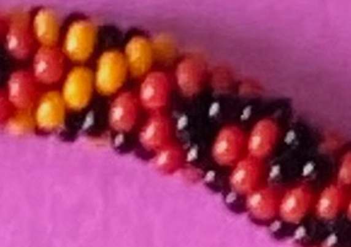
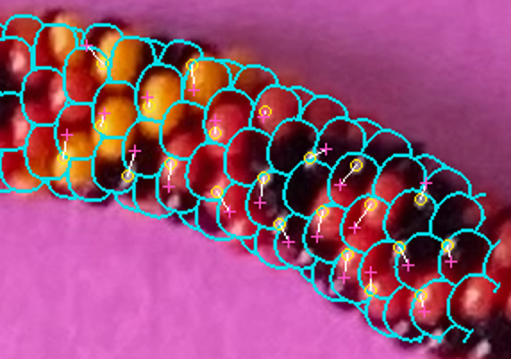
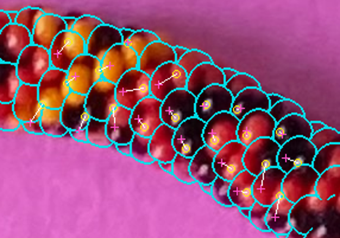
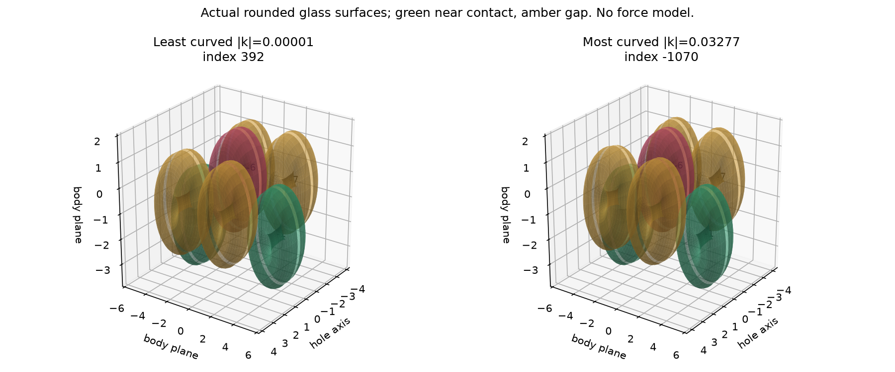
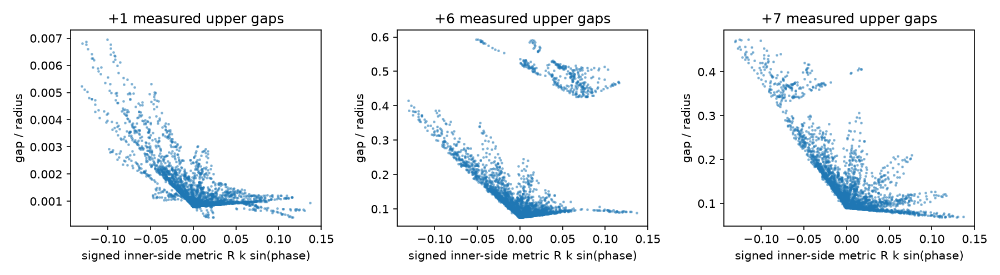

N2800, radius1.95, axial.85: full-chain certificate at33.77px diameter, no centerline change. Curvature-derived spacing changes local advance by10.6% and accumulated station by72.8px. No reconstruction adoption.
Selected geometry: N3000, D31.60px, Emax16.076px, pigment omission9.4%, separator conflicts28.9%. Cyan: predicted visible boundaries; yellow: observed reflection; magenta: predicted reflection; white: displacement. Correspondences remain provisional.
Report / all13 questions · Reproduce · Full original photograph · Measured costs · Future plan · Six-neighbor gap ledger · Actual coverage





Contact surfaces are actual rounded annuli. Positive clearance bounds allow curvature-opened gaps. Green means upper gap≤.02r, amber means a positive gap; no force or equilibrium model. Full records preserve conservative bound widths.